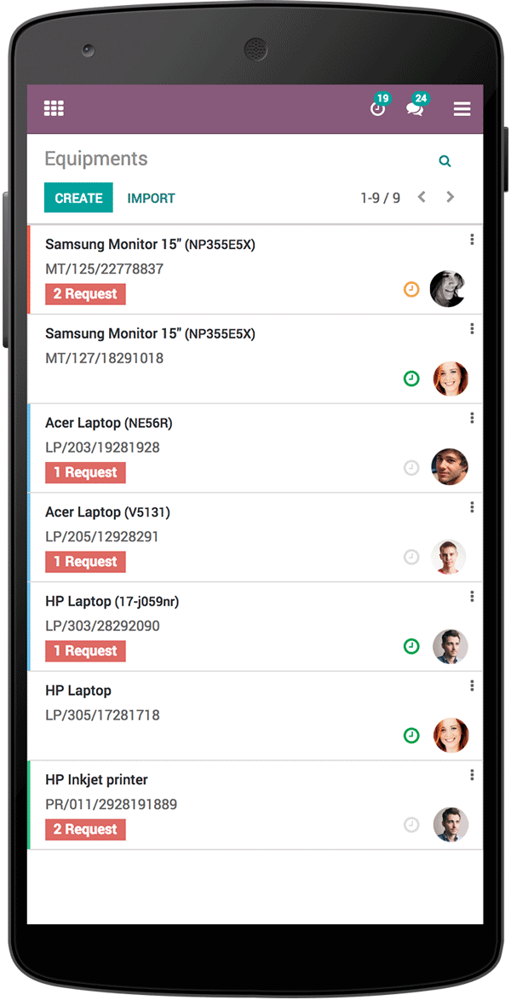
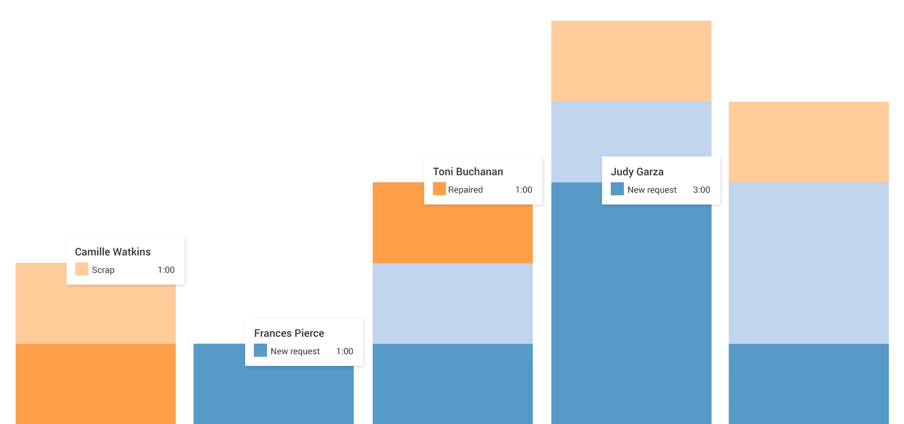

TechNext sets up Odoo Maintenance to keep Casa Escondida's kit dive-ready — tanks, regulators, compressors, boat engines and BCDs. Preventive and corrective maintenance live in one place, so problems are caught on the bench, not at the back-roll.

Keep the kit ready before it fails. Odoo tracks how often and how long each item runs and works out when it's next due for service — so tank hydros, reg overhauls and compressor filters are scheduled automatically, not remembered by luck.
Log a fault the moment it's spotted — a leaking reg, a dodgy inflator — and track it through clear kanban and calendar views. Drag a job between "to do", "in progress" and "done", and nobody dives on gear that's still on the bench.


Spot a problem mid-trip? A guide flags it from their phone and the request lands with the tech instantly — with real-time updates that keep gear turning around fast and downtime low.
Auto-computed reliability stats (mean time between failures and repair) fine-tune your service intervals, and a live dashboard shows which kit is costing you time — build custom KPIs in a few clicks.

Handle both scheduled servicing and unexpected repairs from a single maintenance calendar.
Every tank, reg, BCD and compressor logged with its service history and next-due date.
See every job's status at a glance and plan the week's servicing around the dive schedule.
MTBF and MTTR computed automatically so you retire or service kit before it lets a diver down.
Rental and Maintenance share the same equipment, so a set on the bench is never rented out.
Track cost, downtime and workload with KPIs built to match how the dive centre runs.
Maintenance shares equipment with Inventory and Rental, and pulls parts through Purchase — one need, one app, expand as you grow.